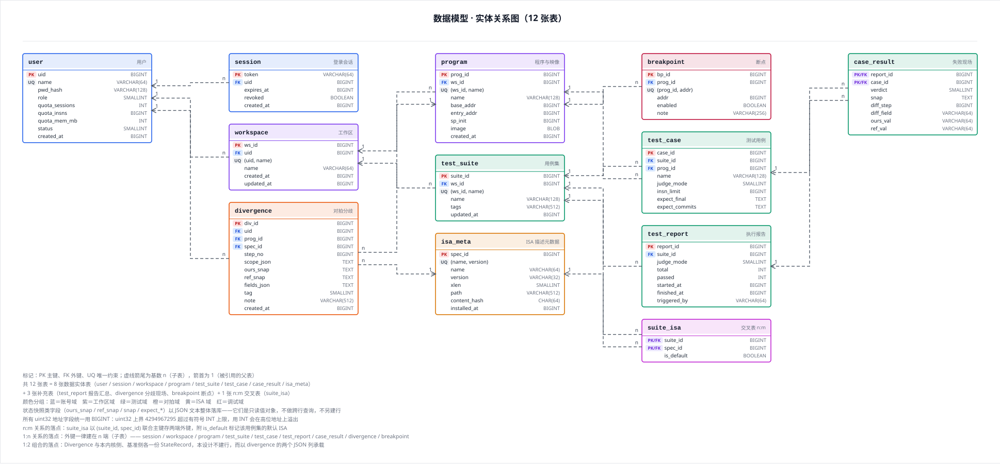
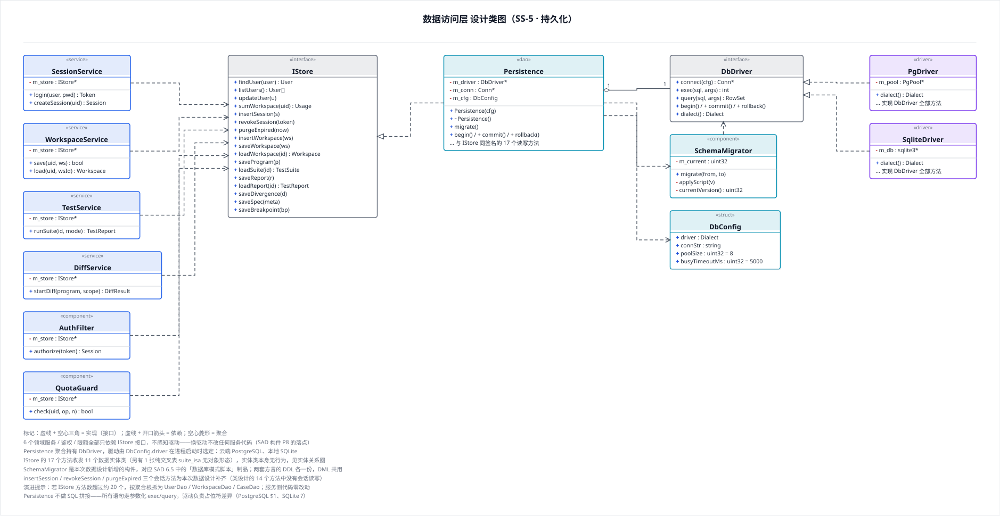
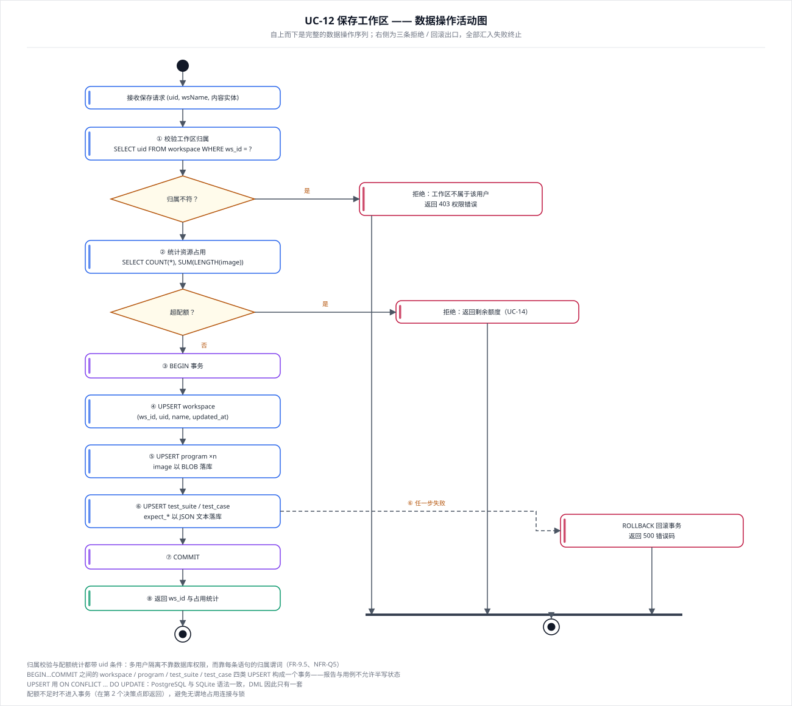
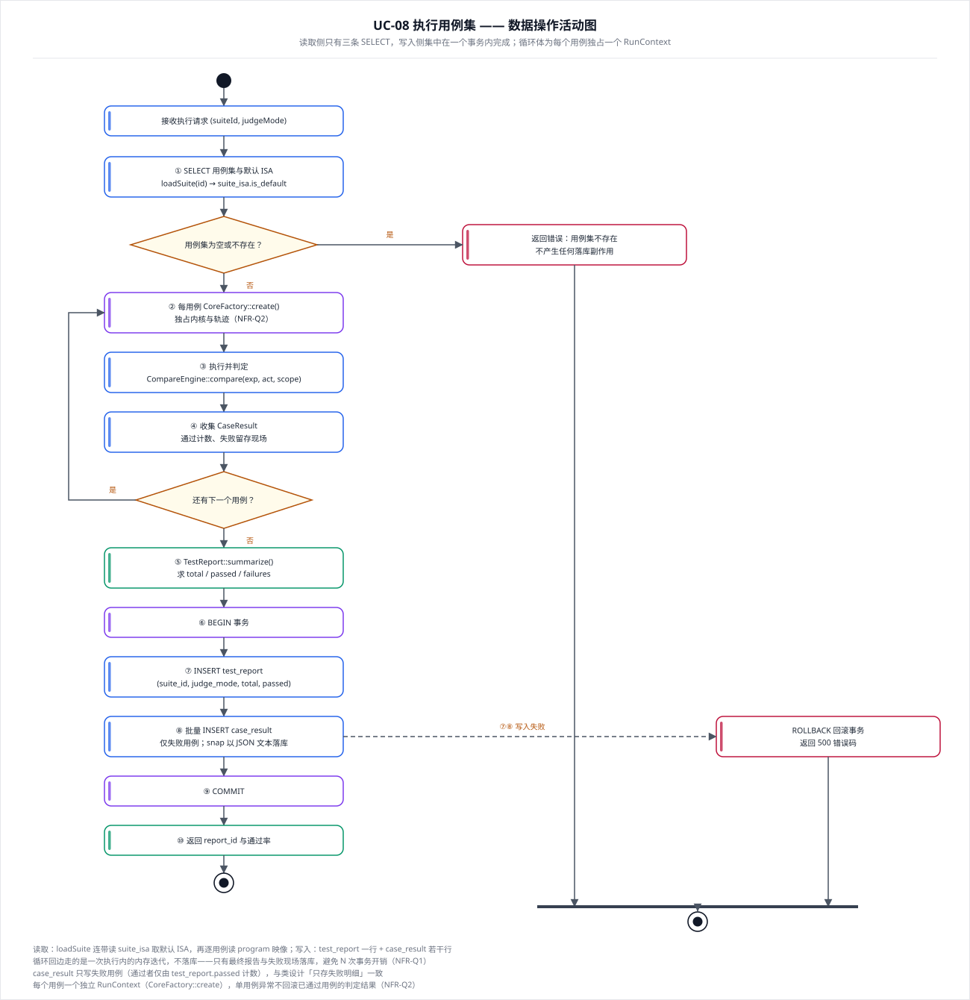

suite_isa 交叉表
按域着色：蓝＝账号、紫＝工作区、绿＝测试、橙＝对拍、黄＝ISA、红＝调试。
三条落点规律：1:1 并入主表（User–Quota 的配额三列直接在 user 表）· 1:n 外键建在 n 端（13 条）· n:m 新增交叉表（TestSuite–IsaMeta → suite_isa）。
Divergence 与两份 StateRecord 的 1:2 组合不建行，以 ours_snap / ref_snap 两个 JSON 列承载——快照是只读值对象，不做跨行查询。

6 个领域服务、鉴权与限额只依赖 IStore 接口，不感知具体驱动——云端 PostgreSQL 与本地 SQLite 的差异被压缩到 DbDriver 的两个实现里，换部署形态不需重新编译服务代码。
SchemaMigrator 对应 SAD 6.5 的「数据库模式脚本」制品；两套方言的 DDL 各一份，DML 共用（UPSERT 语法两形态一致）。
本次新增 6 个设计元素：DbDriver / PgDriver / SqliteDriver / SchemaMigrator / DbConfig / Dialect。

归属校验与配额统计都在事务之外（②之前即返回，不占用连接）；④⑤⑥ 四类 UPSERT 构成一个事务，任一步失败即整体 ROLLBACK。
多用户隔离不靠数据库权限，而靠每条语句带 uid 归属谓词（FR-9.5、NFR-Q5）。

读取侧只有三条 SELECT；循环回边（「还有下一个用例？」→ 每用例重建 RunContext）不落库，只有最终报告与失败现场写入，避免 N 次事务开销（NFR-Q1）。
case_result 只写失败用例——1000 个用例全通过时该表写 0 行，报告表写 1 行。
每个用例独占 RunContext，单用例异常不回滚已通过用例的判定结果（NFR-Q2）。

| 文件 | 内容 | 《数据设计说明.md》对应章节 |
|---|---|---|
数据模型-实体关系图.svg | 12 张表的字段、PK/FK 标记、15 条外键与基数 | 第三章 数据库表设计 |
类图-数据访问层.svg | IStore 17 个方法、Persistence、DbDriver 双实现、SchemaMigrator、DbConfig | 第五章 数据访问层设计 |
活动图-工作区保存落库.svg | UC-12 数据操作序列、事务边界、三条拒绝/回滚出口 | 4.1 / 4.3 / 4.4 / 4.5 |
活动图-测试报告落库.svg | UC-08 数据操作序列、循环回边、写入事务 | 4.1 / 4.3 |
| # | 订正 | 依据 |
|---|---|---|
| 1 | 补 4 张表：test_report / divergence / breakpoint / suite_isa | CaseResult.reportId 是外键，缺报告表则无处可指；其余为类设计中「既是设计类又需落库」或值类型未单列的补齐 |
| 2 | Breakpoint 值类型首次显式化（类数 50 → 51） | 类设计 §3.5 只写到 BreakpointTable.m_items : map<BpId, Breakpoint> |
| 3 | IStore 补 3 个会话方法：insertSession / revokeSession / purgeExpired（14 → 17） | 类设计的 14 个方法中没有会话读写；SAD 6.2 / 6.4 明确把会话列入两形态的持久内容 |
| 4 | 新增 6 个数据访问元素（DbDriver / PgDriver / SqliteDriver / SchemaMigrator / DbConfig / Dialect） | 类设计只写到 m_driver : DbDriver，未定义该抽象；无它双驱动只能靠预处理宏 |